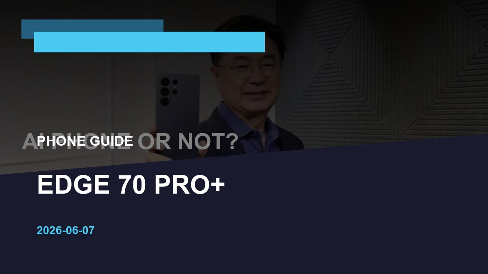

Mobile Tech
iQOO Z11x India: The 7,200mAh Battery Phone Makes One Demand
The iQOO Z11x promises a huge battery and tough build, but buyers should compare software support, camera quality and weight before choosing it over slimmer mid-range phones.
Archive
Articles tagged Mobile Tech India, including India car news, EV sales and viral auto updates.
Mobile Tech
The iQOO Z11x promises a huge battery and tough build, but buyers should compare software support, camera quality and weight before choosing it over slimmer mid-range phones.

Mobile Tech
Motorola's Edge 70 Pro Plus enters India with a big battery and premium camera pitch, but buyers should judge it by software support, service confidence and street pricing.

Automotive News
The next smartphone launch cycle is entering a more practical phase. Readers are no longer satisfied with launch noise; they want to know what actually changes once price, availability, service support and daily usabilit
Automotive News
The phone upgrade market is entering a more practical phase. Readers are no longer satisfied with launch noise; they want to know what actually changes once price, availability, service support and daily usability enter

Mobile Tech
Samsung is preparing new AI-powered health features for the next Galaxy Watch, but Indian buyers should judge the update by daily insight quality, phone compatibility and long-term support.

Mobile Tech
AI is becoming the headline smartphone feature of 2026, but most buyers should separate genuinely useful on-device help from launch-stage demos before upgrading.

Mobile Tech
The processor name gets the attention, but GPU architecture, thermals and sustained performance decide whether a gaming phone still feels fast after 20 minutes.

Mobile Tech
Apple's India story is no longer only about the newest iPhone; storage, cashback, trade-in value and AI support now decide the smarter upgrade.

Mobile Tech
Apple Intelligence is available in India, but the useful question is whether its writing, summary, image and Siri features justify a phone upgrade.

Mobile Tech
Realme, Nothing, Samsung and India Mobile Congress updates show that phone buyers should look past launch noise and check long-term usefulness.

Mobile Tech
AI features are changing phone marketing, but Indian buyers should watch price, RAM, battery life and software support before upgrading.